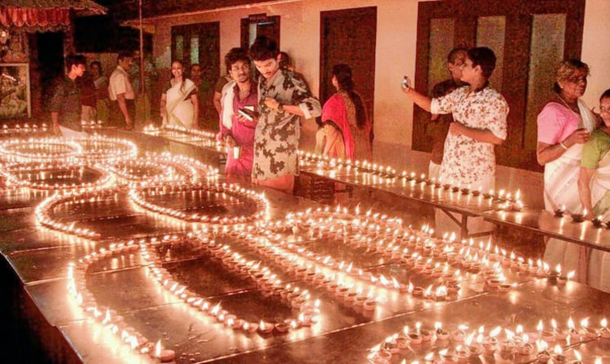

City of Hills
Bounded by the Nilgiris hills on the East and the Arabian Sea on the west, the district of Malappuram literally the land atop the hills, is remarkable for its unique natural beauty. Perched among the undulating hills and the meandering rivers that flow to reach the coconut-fringed seacoast, the land conceals a unique and eventful history.
Top Destinations

Mamburam
A famous Muslim Pilgrimage in the Malappuram district, Mamburam is a shrine dedicated to the dead bodies of some of the primary Thangals of Kerala. It was a title given to the Arabs from Yemen who scattered from there and migrated to Kerala.

Biyyam Kayal
The region of Malappuram is full of backwater lakes created inland, and one of the most famous ones in the region is the Biyyam Kayal. Located close to Ponnani in the Malappuram district has recently been revamped to the status of an adventure zone of the area.

Kodikuthimala
Another attraction of Malappuram that is often compared to the famous town of Ooty, Kodikuthimala is definitely a sight for the sore eyes. A hill station of Kerala, the place is perched on a height of about 522 m above sea level, and is the highest point in the Amminikkadan hills.

Kadalundi Bird Sanctuary
The Kadalundi Bird Sanctuary or the Kadalundi Nagaram, is definitely one of the best places to visit in Malappuram. It sits right at the spot where River Kadalundi Puzha flows into the Arabian Sea.Easily accessible from Malappuram and Kozhikode, the bird sanctuary is host to about 100 species of native birds, and about 60 species of migratory birds.

Bharathapuzha River
The River of Bharata, also known as Nila, the Bharathapuzha River is a west-flowing river in the state of Kerala, and is the second longest river in the state. The river has been an integral part of life in the southern regions of Malabar. The name Nila has been given to the river to show the importance of it being more than just a river, as there are several mentions of the river in the ancient Hindu scriptures.

Pazhayangadi Mosque
Associated with one of the most prominent saints of Islam who ever set foot in India, the Pazhayangadi Mosque is more than 500 years old. Known by its other name Kondotty Thangal, the mosque is constructed with a white dome and displays intricate carvings all throughout, giving it a resemblance to the Mughal Style of Architecture.

Angadipuram Temple
Angadipuram Temple, also known as Angadipuram Thirumandhamkunnu Bhagavathy or Bhadrakali Temple, is located in the city of the same name, which was once the capital of Valluvanad kingdom. Dedicated to Thirumandhamkunnil amma who was the mother goddess of the kings of the empire.

Kadampuzha Temple
Kadampuzha Temple, one of the ancient temples of the district is situated in the remote town named Melmuri of Tirur taluk. Despite the fact that there is no recorded proof for the development of this sanctuary however a solid conviction expresses that it was built by Jagadguru Shri Shankara Acharya of Kalady.

Kovilakoms
The royal residence of the ruling family of Nilambur, the Kovilakoms is one of the best attractions in the list of Malappuram tourist places. There are a number of houses and sections in the premises, with a few of the oldest ones dating back to almost 200 years old.

Keralamkundu Waterfalls
A basin at the base of waterfalls where people can enjoy a dip in the pond is something everyone wants to have an experience. Keralam Kundu Waterfalls are undoubtedly the best of all Malappuram Tourist Places, and that is why people keep flocking here to have an experience of the mystical.